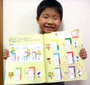
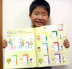

花まる大公開！

※複数回の応募も可能です｡
※ﾍﾞﾈｯｾのｻｲﾄに移動します｡

|
みなさんの 花まる大公開！ |
|
 |
|
｢はなまるあかえんぴつ｣で､おうちのかたがつけたｵﾘｼﾞﾅﾙのはなまる(5月号教材でご紹介している花まるｱﾚﾝｼﾞでもかまいません)を携帯電話で撮影して､お子さんの反応やｴﾋﾟｿｰﾄﾞと一緒に投稿してください｡投稿いただいた写真の一部は､携帯およびPC版の｢しまじろうひろば｣で紹介させていただきます｡(5/31投稿受付締切) ※複数回の応募も可能です｡ |
|
投稿･発表はこちら ※ﾍﾞﾈｯｾのｻｲﾄに移動します｡ |